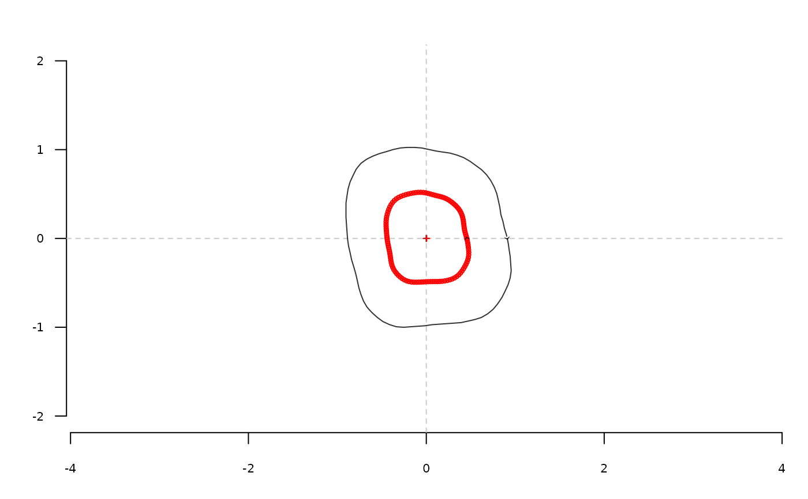

Radii variation Fourier transform (equally spaced curvilinear abscissa)
Source:R/core-out-sfourier.R
sfourier.Rdsfourier computes radii variation Fourier analysis from a matrix or a
list of coordinates where points are equally spaced aong the curvilinear abscissa.
Usage
sfourier(x, nb.h)
# Default S3 method
sfourier(x, nb.h)
# S3 method for class 'Out'
sfourier(x, nb.h)
# S3 method for class 'list'
sfourier(x, nb.h)Value
A list with following components:
anvector of \(a_{1->n}\) harmonic coefficientsbnvector of \(b_{1->n}\) harmonic coefficientsaoao harmonic coefficientrvector of radii lengths
References
Renaud S, Michaux JR (2003): Adaptive latitudinal trends in the mandible shape of Apodemus wood mice. J Biogeogr 30:1617-1628.
See also
Other sfourier:
sfourier_i(),
sfourier_shape()
Examples
molars[4] %>%
coo_center %>% coo_scale %>% coo_interpolate(1080) %>%
coo_slidedirection("right") %>%
coo_sample(360) %T>% coo_plot(zoom=2) %>%
sfourier(16) %>%
sfourier_i() %>%
coo_draw(bor="red", points=TRUE)
